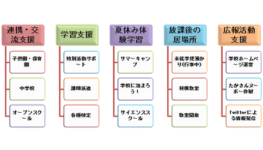
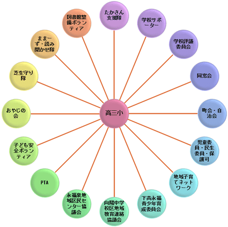

たかさん支援隊とは
たかさん支援隊の活動
高井戸第三小学校（高三小）はこれまでも、地域の方々や 保護者ボランティアによる様々な活動がおこなわれてきました。 たかさん支援隊は、これらの皆様のお力添えを頂きながら 独自の事業をおこなっていきます。
たかさん支援隊は先生方に本来業務に専念していただけるよう、 仕事をサポートするという発想で始まりました。 ですから、先生方から「これは支援隊に！」という連携が当たり前に なれば良いと私どもは考えます。
そして、学校の方針に従い支援するのが私どもの役目です。 「高三小」をボートに例えるならば、 「目標」が校長先生を中心とした学校の方針であり、 それに向かって皆でオールを漕いでいるようなものです。 支援隊はそのオールの1本なのです。
発想や連携の仕方によっては色々な可能性がございます。 ぜひ皆様の声をお聞かせください。
地域の方々や保護者の皆様と手を携え、 子どもたちのために微力ながら力を尽くして参りたいと思います。
たかさん支援隊の活動イメージ

高三小をとりまくもの
高三小の子どもたちは、たくさんの方々に見守られています。
高井戸第三小学校の校外組織図

サポーター募集チラシ
たかさん支援バザーポスター
たかさん支援隊の沿革
- 2013.11.02 『高三小まつり』開催
- 2013.08.18 『たかさん夏まつり』開催
- 2013.07.20 『ダブルダッチ＆長なわスクール』開催
- 2013.07.08 『4年生国際交流授業』
- 2013.07.06 『ダブルダッチ＆長なわスクール』開催
- 2013.06.** 分区連合学習会へ参加
- 2013.06.** 区コーディネーター研修へ参加
- 2013.06.15 『ダブルダッチ＆長なわスクール』開催
- 2013.06.01 『ダブルダッチ＆長なわスクール』開催
- 2013.06.01 『漢字検定』開催
- 2013.05.20 PTA運営委員会・予算委員会へ出席
- 2013.05.18 『ダブルダッチ＆長なわスクール』開催
- 2013.03.15 日本大学ダブルダッチサークルとの打ち合わせ
- 2013.03.14 下高井戸児童館との打ち合わせ
- 2013.03.13 1、2年生図書の時間『ままーず読み聞かせ』実施
- 2013.03.05 『保護者会での未就学児預かり・児童館利用（低学年）』
- 2013.03.01 『保護者会での未就学児預かり・児童館利用（中学年）』
- 2013.02.28 『保護者会での未就学児預かり・児童館利用（高学年）』
- 2013.02.25 6年生『茶道授業』
- 2013.02.19 6年生『華道授業』
- 2013.02.09 『漢字検定』開催
- 2013.01.17 全学年体育授業費支援（～2/26）
- 2012.12.13 【東京都】地域教育力を高めるボランティアセミナーに出席
- 2012.12.07 『保護者会での未就学児預かり・児童館利用（低学年）』
- 2012.12.06 『保護者会での未就学児預かり・児童館利用（中学年）』
- 2012.12.05 学校支援コーディネーター研修に出席
- 2012.12.04 『保護者会での未就学児預かり・児童館利用（高学年）』
- 2012.11.23 6年生「被爆体験を聞く」授業間講師へ交通費支援
- 2012.11.12 杉並区学校支援本部ホームページ研修に出席
- 2012.11.10 『漢字検定』開催
- 2012.11.06 学校支援コーディネーター研修に出席
- 2012.11.01 ニュージーランド教員学校視察団による交流授業の撮影支援
- 2012.11.01 3年生図書の時間『ままーず読み聞かせ』実施
- 2012.10.25 6年生国際理解授業講師依頼給食費支援
- 2012.10.22 『6年生連合運動会練習サポート』実施（全3回）
- 2012.10.** 4年生図書の時間『ままーず読み聞かせ』実施
- 2012.10.17 学校支援コーディネーター研修に出席
- 2012.10.16 4年生総合的学習の時間講師へ交通費給食費支援
- 2012.10.06 高三道徳地区公開講座講師へ交通費支援
- 2012.09.14 高三小新入生対象説明会に出席
- 2012.08.25 『学校へ泊まろう！』開催（～26日）
- 2012.07.26 養護教諭事務処理支援（～27日）
- 2012.07.26 図書室司書と図書ボラ・読み聞かせグループの顔合わせに出席
- 2012.07.21 『バスケ de 体力アップ！』開催
- 2012.07.18 保険会社との打ち合わせ（バスケ）
- 2012.07.10 『保護者会での未就学児預かり・児童館利用（高学年）』
- 2012.07.07 『たかさん支援バザー』
- 2012.07.06 『保護者会での未就学児預かり・児童館利用（中学年）』
- 2012.07.05 保険会社との打ち合わせ（バザー）
- 2012.07.05 『保護者会での未就学児預かり・児童館利用（低学年）』
- 2012.07.04 学校支援コーディネーター研修（2回目）に出席
- 2012.07.04 「2年生総合の時間」講師8名分謝金支援・撮影
- 2012.07.03 『4年生国際交流授業』
- 2012.07.02 バザーに関する届出（保健所）
- 2012.06.27 「4年生国際交流授業」シミュレーションと打ち合わせ
- 2012.06.28 都コーディネーターミーティングに出席
- 2012.06.27 携帯電話会社との打ち合わせ
- 2012.06.26 気象庁地震速報対応の避難訓練参加、理科講師との打ち合わせ
- 2012.06.24 「学校へ泊まろう！」打ち合わせ（永福消防署）
- 2012.06.20 「学校へ泊まろう！」打ち合わせ（児童館他）
- 2012.06.19 学校支援分区連絡学習会に出席
- 2012.06.16 『バスケ de 体力アップ！』開催
- 2012.06.12 「2年生総合の時間」講師2名分謝金支援
- 2012.06.12 国際交流授業打ち合わせ（早稲田大学）
- 2012.06.08 向陽中学校区小中一貫だより用撮影
- 2012.06.05 学校支援コーディネーター研修（1回目）に出席
- 2012.06.01 学校要覧用撮影（6月2日も）
- 2012.05.29 保育園児高三運動会見学撮影（学校要覧用）
- 2012.05.25 離任式出席
- 2012.05.22 職員朝会へ出席
- 2012.06.12 国際交流授業打ち合わせ（4年担任）
- 2012.05.20 おやじの会BBQとソフトボール会に参加
- 2012.05.16 PTA運営委員会へ出席
- 2012.05.13 「青少年の為のチャリティコンサート」（後援）
- 2012.05.12 『フィジカル・スリーバスケットボールクラブ体験会』(5月20日も）
- 2012.05.01 学校経営陣との打ち合わせ
- 2012.04.19 『保護者会での未就学児預かり（低学年）』
- 2012.04.16 漢字検定協会との打ち合わせ
- 2012.04.13 『保護者会での未就学児預かり（中学年）』
- 2012.04.12 『保護者会での未就学児預かり（高学年）』
- 2012.03.27 校長先生との打ち合わせ
- 2012.03.08 『ままーず＆2年生読み聞かせ隊 合同読み聞かせ』
- 2012.03.02 『保護者会での未就学児預かり（低学年）』
- 2012.02.29 『1年生体育授業（外部講師）』
- 2012.02.29 『6年生茶道授業』
- 2012.02.28 『保護者会での未就学児預かり（中学年）』
- 2012.02.24 『保護者会での未就学児預かり（高学年）』
- 2012.02.24 『6年生茶道授業の前礼』
- 2012.02.23 情報モラル教育指導員養成講座へ出席
- 2012.02.16 『6年生キャリア教育授業』
- 2012.02.09 高井戸第三小地域子育てネットワーク地域連絡会へ出席
- 2011.12.06 『学級懇談会での未就学児預かり（高学年）』
- 2011.12.02 『学級懇談会での未就学児預かり（中学年）』
- 2011.12.01 『学級懇談会での未就学児預かり（低学年）』
- 2011.10.13 『6年生連合運動会練習サポート』（全6回）
- 2011.10.12 『5年生環境リサイクル授業』
- 2011.10.12 『2年生PC授業サポート』（全2回）
- 2011.09.24 浜田山小「科学絵本読み聞かせ」に出席
- 2011.09.22 『5年生家庭科授業保護者サポート』(全6回）
- 2011.09.16 新1年生保護者説明会に出席
- 2011.09.15 学校へ泊まろう！アンケート配布
- 2011.08.31 学校HPに杉並区の「給食食材公開」のリンク設置
- 2011.08.31 5年生社会科授業打ち合わせ（担任・三菱自動車の方と）
- 2011.08.20 『学校へ泊まろう！』開催（～21日）
- 2011.07.21 『2年生PC授業保護者サポート』
- 2011.07.15 『1年生PC授業保護者サポート』
- 2011.07.08 『保護者会での未就学児預かり（中学年）』
- 2011.07.07 『保護者会での未就学児預かり（低学年）』
- 2011.07.04 図書ボランティア打ち合わせへ出席
- 2011.06.23 六分区支援本部情報交歓会へ出席
- 2011.06.18 『たかさん支援バザー』
- 2011.06.01 『PTA総会での児童預かりと図書室開放』
- 2011.06.01 『校長先生と給食＆座談会』スタート
- 2011.05.21 おやじの会BBQとソフトボール会に参加
- 2011.05.20 PTA正副会長と打ち合わせ
- 2011.05.18 図書ボランティア打ち合わせへ出席
- 2011.05.18 PTA運営委員会へ出席
- 2011.05.16 向陽中へバザーのポスター貼付依頼
- 2011.05.10 職員朝会へ出席
- 2011.05.02 各町会長宅へバザー等についてご説明
- 2011.05.02 「たかさん支援バザー物品寄付ご協力のお願い」配布
- 2011.04.27 PTA合同委員会へ出席
- 2011.04.22 学校コーディネーターとの打合せ・離任式出席
- 2011.04.21 『保護者会での児童預かり（3年）』
- 2011.04.20 たかさんヌーボー教員向け講習会
- 2011.04.15 『保護者会での児童預かり（低学年）』
- 2011.04.14 『保護者会での児童預かり（4年）』
- 2011.04.14 前年度PTA執行部との打合せ
- 2011.04.12 『保護者会での児童預かり（高学年）』
- 2011.04.12 Twitter（@taka3_shientai）利用開始
- 2011.04.12 PTA執行部との打合せ
- 2011.03.19 フェス高三の打ち合わせに参加
- 2011.03.16 『6年生歩き方指導』
- 2010.03.04 『保護者会での児童預かり（低学年）』
- 2010.03.01 『保護者会での児童預かり（中学年）』
- 2011.02.28 「てくてくなみすけ」(http://www.namisuke.com/)にお茶授業をご掲載いただく
- 2010.02.25 『保護者会での児童預かり（高学年）』
- 2011.02.23 『6年生体育授業』
- 2011.02.22 『6年生体育授業』
- 2011.02.22 PTA執行部との打合せ
- 2011.02.21 『6年生お茶授業保護者サポート』
- 2011.02.18 たかさんヌーボー教員向け講習会
- 2011.02.09 『3年生体育授業』
- 2011.02.07 『4年生お茶授業保護者サポート』
- 2011.01.28 『たかさんヌーボー』立ち上げ
- 2010.12.13 『1年生PC授業保護者サポート』
- 2010.12.07 『保護者会での児童預かり（高学年）』
- 2010.12.03 『保護者会での児童預かり（中学年）』
- 2010.12.03 『6年生裁判傍聴』実施
- 2010.12.02 『保護者会での児童預かり（低学年）』
- 2010.12.02 『2年生PC授業保護者サポート』
- 2010.11.29 裁判傍聴事前授業（6年生）
- 2010.11.27 コーディネーター講演会出席（セシオン杉並）
- 2010.11.27 杉一小視察
- 2010.11.27 高三小餅つき手伝い
- 2010.11.25 『2年生PC授業保護者サポート』
- 2010.11.25 裁判傍聴実踏（引率保護者）
- 2010.11.24 裁判傍聴について担当弁護士と打ち合わせ
- 2010.11.12 ユニバーサルデザイン授業講師の方の舞台鑑賞
- 2010.11.11 天沼小茶道体験見学
- 2010.11.10 天沼小裁判傍聴同行
- 2010.10.25 『4年生ユニバーサルデザイン授業』実施
- 2010.10.13 『6年生連合運動会練習サポート』実施（全6回）
- 2010.09.15 高三小新一年生保護者会にて当本部の説明
- 2010.09.04 『学校支援者学習会』開催
- 2010.08.27 和泉小グリーンコンサートにて「学校支援者学習会」のチラシ配布
- 2010.08.27 近隣小学校へ「学校支援者学習会」の案内
- 2010.08.02 『伊豆大島サマーキャンプ』開催
- 2010.07.24 『和泉小GP・芝刈り体験』参加
- 2010.07.16 PTA運営委員会にてバザー収益金の使途について説明
- 2010.07.16 『1年生PC授業保護者サポート』
- 2010.07.15 『2年生PC授業保護者サポート』
- 2010.07.14 『伊豆大島サマーキャンプ説明会』開催
- 2010.07.14 『PC授業保護者サポート』（1年生）をスタート
- 2010.07.13 「和泉小GP・芝刈り体験のお誘い」配布
- 2010.07.02 「たかさん支援バザー」反省会（支援隊・執行部・企画部）
- 2010.07.01 『保護者会での児童預かり（高学年）』
- 2010.06.26 『たかさん支援バザー』PTAと共催で実施
- 2010.06.22 『社会科見学』（4年生）の保護者サポートをスタート
- 2010.06.16 PTA運営委員会にてバザー収益金をたかさん支援隊の収入とすることを承認いただく
- 2010.06.12 フェス高三の「モンキーブリッジ」に参加
- 2010.06.10 『図書ボランティア向け本の修理講習会』開催（講師：ＮＰＯの方）
- 2010.06.09 島町会のHPに「たかさん支援バザー」のポスターをご掲載いただく
- 2010.06.05 グリーンプロジェクト取材で和泉小学校へ
- 2010.06.04 学校公開にて『読み聞かせ講演会』開催
- 2010.06.01 「読み聞かせ講演会のお知らせ」配布
- 2010.05.31 「たかさん支援バザー物品寄付ご協力のお願い」配布
- 2010.05.31 PTA広報紙「たかさん職員紹介号」で当本部長をご紹介いただく
- 2010.05.29 『学校サポーター募集』のリーフレットを明治大学で配布
- 2010.05.26 PTA「運営委員会だよりNo.1」で当本部について記載いただく
- 2010.05.25 PTA広報紙「たかさん106号」で当本部をご紹介いただく
- 2010.05.24 「伊豆大島サマーキャンプ募集のお知らせ」配布
- 2010.05.01 「平成22年度学校要覧」で当本部について記載いただく
- 2010.04.21 『図書館環境整備ボランティア募集』をスタート
- 2010.04.16 『保護者会での児童預かり（低学年）』
- 2010.04.15 『保護者会での児童預かり（中学年）』
- 2010.04.13 『保護者会での児童預かり（高学年）』
- 2010.04.12 校長・副校長・教務主幹との打合せ
- 2010.04.05 平成22年度PTA執行部との打合せ
- 2010.03.19 「教育支援コーディネーター・ミーティング」に出席
- 2010.03.05 『保護者会での児童預かり』（低学年）をスタート
- 2010.03.04 杉並区より支援本部室視察
- 2010.02.26 学校長・副校長との打合せ
- 2010.02.23 学校コーディネーター香月さんと打合せ
- 2010.02.15 『6年生茶道体験』のサポートをスタート
- 2009.12.24 PTA広報紙「たかさん105号」で当本部をご紹介いただく
- 2010.12.01 高三小「学校だより12月号」で当本部の発会式の様子をご紹介いただく
- 2009.12.01 名称をよりわかりやすい『たかさん支援隊』へ 変更
- 2009.11.23 島町会のHP（http://sugi-ck.net/sugi/pages/gp/shima）に発会式の写真をご掲載いただく
- 2009.11.20 PTA「運営委員会だよりNo.6」で当本部について記載いただく
- 2009.11.17 『杉並区立高井戸第三小学校支援本部発会式』開催（於：多目的室）名称『高三支援隊』・活動内容等発表◇併催：設立記念『雅楽ミニコンサート』（東京都神道青年会雅楽部の皆様）
- 2009.10.01 高三小「学校だより10月号」で当本部をご紹介いただく
- 2009.10.15 『学校支援本部名称募集のお知らせ』回収
- 2009.09.28 PTA「運営委員会だよりNo.4」で当本部について記載いただく
- 2009.09.17 『学校支援本部名称募集のお知らせ』配布
- 2009.09.01 杉並区立高井戸第三小学校支援本部 発足（本部長：斎藤明比古）
- 2009.08.20 杉並区教育委員会より杉並区立高井戸第三小学校支援本部の設立 認可
- 2009.08.08 『学校支援本部設立に向けての勉強会』開催（於：図書室）講師：伴野博美様（杉並区学校支援本部実行委員会学校教育コーディネーター）
- 2009.07.15 PTA「運営委員会だよりNo.3」で当本部について記載いただく
- 2009.07.02 「学校支援本部立ち上げに関するヒアリング」に委員長・学校長 出席
- 2009.06.18 PTA「運営委員会だよりNo.2」で当本部について記載いただく
- 2009.06.17 学校支援本部設立の関係団体代表者への説明会 開催
- 2009.06.01 杉並区立高井戸第三小学校支援本部設立委員会 発足（委員長：斎藤明比古）

 Copyright (c) 2010 たかさん支援隊. All rights reserved.
Copyright (c) 2010 たかさん支援隊. All rights reserved.